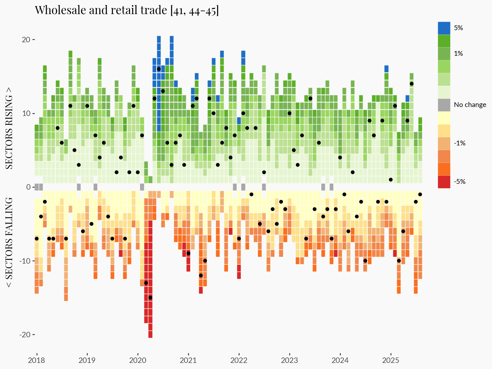
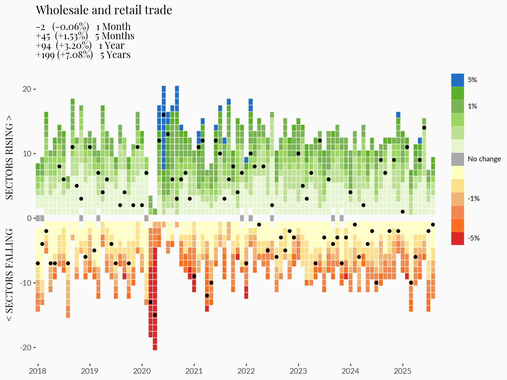
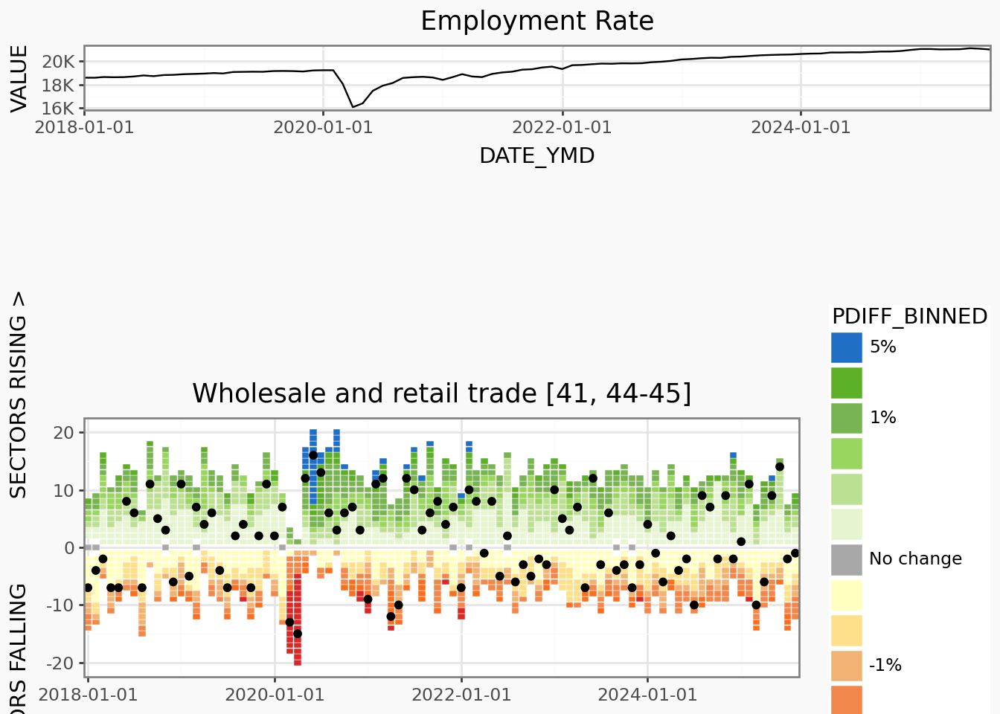
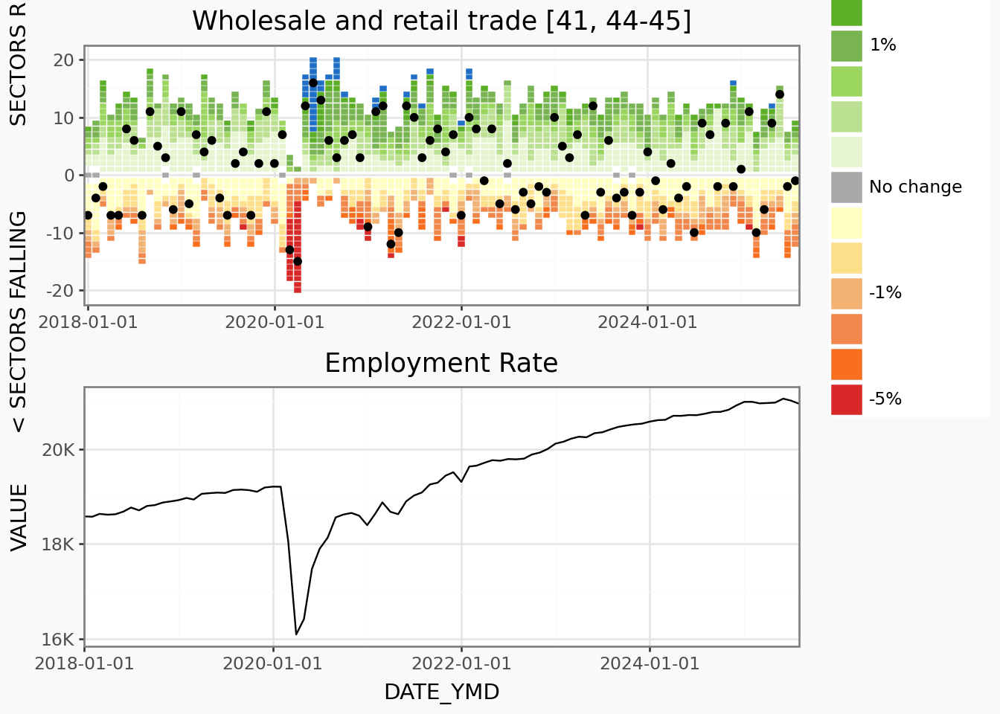
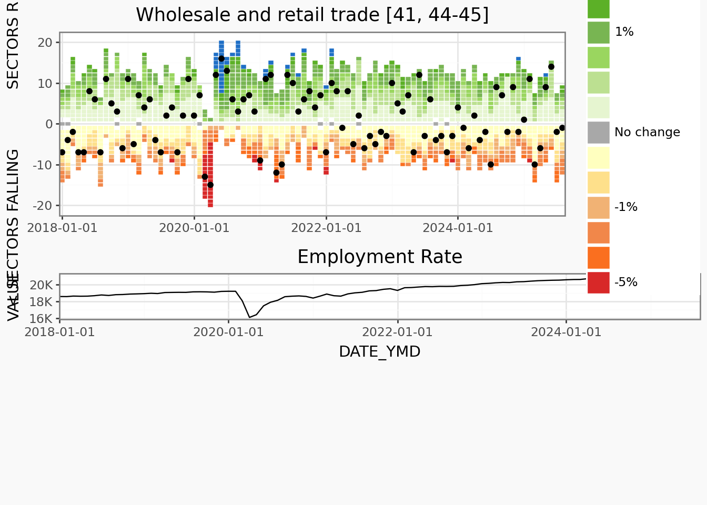

1from pyprojroot import here- 1
-
pyprojrootis similar to R’s packagehere, which lets us construct filepaths relative to the project root. This is very convenient especially for quarto projects with complex file organization.
Current Canadian sentiment is at a low, with high cost-of-living, global political instability, and sweeping layoffs across multiple sectors. For the 2025 plotnine contest, I wanted to explore current official Canadian labour statistics using plotnine, a data visualization library in python.
I am so happy that plotnine exists, which is a relatively new python data visualization package. plotnine is based on ggplot2, an R package that I have been using for almost a decade.
In this tutorial, I’ll walk through the process of creating my plotnine 2025 contest submission. The plot shows employment across Canadian industries, ranked by their percent change in monthly employment. To help visualize data across different industries, industry-specific plots are laid out in a “pseudo” interactive manner.
The data can be downloaded using this bash script, or directly from StatCan’s website.
In this initial code chunk we initialize some parameters that, later if needed, we can rerun this entire notebook with different parameters (e.g. different years). Read more about Quarto parameters here.
1from pyprojroot import herepyprojroot is similar to R’s package here, which lets us construct filepaths relative to the project root. This is very convenient especially for quarto projects with complex file organization.
LABOUR_DATA_FILE = here() / "data" / "14100355.csv"
FIGURE_THEME_SIZE = (8, 6)
FILTER_YEAR = (2018, 2025)Now load the rest of the packages. Throughout this tutorial, I will describe when functions from each of these packages are being used.
# Data manipulation
import polars as pl
import polars.selectors as cs
from datetime import date, datetime
# Visualization
from plotnine import *
# Mizani helps customize the text and breaks on axes
from mizani.bounds import squish
import mizani.labels as ml
import mizani.breaks as mb
import textwrap # for wrapping long lines of text
# Custom extract and transform functions for plot data
from labourcan.data_processing import read_labourcan, calculate_centered_rankThe visualization required a fair amount of data processing which is detailed in this page. The steps are summarized here:
read_labourcan returns a polars.Data.Frame with:
YEAR, MONTH, and DATE_YMD columns extracted from REF_DATESee labour.qmd for details on data processing.
labour = read_labourcan(LABOUR_DATA_FILE)
labour_processed = calculate_centered_rank(labour)The data is several gigabytes large. Because of this, the data is not stored in the github repo. Please use this script to download the data.
The type of graphic that we’re developing today can be described as something like a heatmap of employment numbers.
The motivation is to tell a story about Canada’s job sector, and specifically the variation in employment numbers over time. Thefore, I wanted to create a visualization that would clearly separate industries that are growing versus shrinking.
Therefore, I derived a rank ordering by % monthly changed, but that is centered around 0, such that growing sectors with a positive % change will have a positive ranking and shrinking sectors will have a negative one. The ranking will start at 1 / -1, and increase / decrease away from 0. See calculate_centered_rank for implementation details.
(
ggplot(
(
1 labour_processed.filter(
pl.col("YEAR") >= FILTER_YEAR[0], pl.col("YEAR") <= FILTER_YEAR[1]
)
),
2 aes(x="DATE_YMD", y="centered_rank_across_industry", color="PDIFF"),
)
+ geom_point(shape="s")
3 + theme_tufte()
+ theme(figure_size=FIGURE_THEME_SIZE, axis_text_x=element_text(angle=90))
4 + scale_color_gradient2(
5 limits=(-0.01, 0.01), low="#ff0000ff", high="#0000dbff", midpoint=0, oob=squish
)
)aes to map our variables: DATE_YMD (date in datetime format) to x, ranking (i64) to y, and color each point by the percent monthly change PDIFF (f64).
theme_tufte as a base to build up customizations
scale_color_gradient2 is a great color mapping function because it can allow us to easily specify that we want a palette that centers around a midpoint (0).
limits=c(-0.01, 0.01) and oob=squish is very impactful here, which in combination makes the color palette stop at a -1% and +1%, everything that is beyond these limits will take on the darkest colors.

geom_point or geom_tileI like to start shaping plots by starting with the major components, which geom is most appropriate for this type of data?
This first version has quite a bit of whitespace between each point, which I find is distracting. I could make the point size larger, but the ratio of point size to the range of the x and y axis, as well as the figure size all will ultimately determine how much whitespace remains between each point. This makes sizing tricky.
If we use geom_tile instead, which will plot rectangles specified by a center point, we can explicitly control the whitespace between tiles.
(
ggplot(
(
labour_processed.filter(
pl.col("YEAR") >= FILTER_YEAR[0], pl.col("YEAR") <= FILTER_YEAR[1]
)
),
aes(x="DATE_YMD", y="centered_rank_across_industry", fill="PDIFF"),
)
1 + geom_tile(height=0.95, width=30 * 0.95)
+ theme_tufte()
+ theme(figure_size=FIGURE_THEME_SIZE, axis_text_x=element_text(angle=90))
+ scale_fill_gradient2(
limits=(-0.01, 0.01), low="#ff0000ff", high="#0000dbff", midpoint=0, oob=squish
)
)height = 0.95 leaves a small amount of whitespace between tiles vertically. To remove horizontal whitespace, we need to specify a width. Because we are using a datetime axis, we need to specify it in unit of days. But each tile here is a month, so we need to express in units of 30, hence: width = 30*0.95.

scale_color_manualscale_fill_gradient2 used with squish creates a nice palette that’s centered around 0. However scale_fill_gradient2 is limited to 3 colors (high, midpoint, low), but I would like to highlight variability in the data with a lot more control than what these 3 points can provide.
To be more explicit with the colors, I will bin the % change variable and then map each bin to a color manually using scale_fill_manual.
polars.Series.cutBinning is the process of breaking up a continuous variable into categories based on specific thresholds.
labour_processed_cutted = (
labour_processed.with_columns(
pl.col("PDIFF")
.cut(
[
-0.05,
-0.025,
-0.012,
-0.0080,
-0.0040,
0,
0.0040,
0.0080,
0.012,
0.025,
0.05,
]
)
.alias("PDIFF_BINNED")
)
.with_columns(
pl.when(pl.col("PDIFF") == 0)
.then(pl.lit("0"))
.otherwise(pl.col("PDIFF_BINNED"))
.alias("PDIFF_BINNED")
)
.sort("PDIFF")
.with_columns(pl.col("PDIFF_BINNED"))
)
labour_processed_cutted.group_by("PDIFF_BINNED").len()| PDIFF_BINNED | len |
|---|---|
| cat | u32 |
| "(-inf, -0.05]" | 47 |
| "(0.004, 0.008]" | 1736 |
| "(-0.05, -0.025]" | 255 |
| "(-0.025, -0.012]" | 892 |
| "(0.05, inf]" | 58 |
| … | … |
| null | 21 |
| "(0.008, 0.012]" | 1021 |
| "(-0.008, -0.004]" | 1201 |
| "(0.012, 0.025]" | 1292 |
| "(0.025, 0.05]" | 315 |
After binning the data by % change, we can see what happens when we map color to this new binned version:
(
ggplot(
(
labour_processed_cutted.filter(
pl.col("YEAR") >= FILTER_YEAR[0], pl.col("YEAR") <= FILTER_YEAR[1]
)
),
aes(
x="DATE_YMD",
y="centered_rank_across_industry",
1 fill="PDIFF_BINNED",
),
)
+ geom_tile(height=0.95)
+ theme_tufte()
+ theme(figure_size=FIGURE_THEME_SIZE, axis_text_x=element_text(angle=90))
)plotnine sees that we mapped a categorical variable to fill, so it uses a default palette that isn’t necessarily optimized for the continuous (ie. ordinal) nature of bins. To offend even further, we can see that the categories are not even by default ordered correctly (most negative to most positive).

It’s definitely uglier, not nicer. But that’s ok, it’s giving us finer control, and we’re going to use that to fix this in the next section…
scale_fill_manual for explicit color mappingNow we need to order the levels, and map to a specific color palette.
We will make PDIFF=0% (no change) to be gray, positive values to have green and blue colors (growth = good), and negative values to be red and orange (contraction = bad) colors.
order = (
labour_processed_cutted.drop_nulls()
.sort("PDIFF")
.select(pl.col("PDIFF_BINNED"))
.unique(maintain_order=True)
.to_series()
.to_list()
)
labour_processed_cutted_ordered = labour_processed_cutted.with_columns(
pl.col("PDIFF_BINNED").cast(pl.Enum(order))
)
1color_mapping = {
"(-inf, -0.05]": "#d82828ff",
"(-0.05, -0.025]": "#fa6f1fff",
"(-0.025, -0.012]": "#f1874aff",
"(-0.012, -0.008]": "#f1b274ff",
"(-0.008, -0.004]": "#FEE08B",
"(-0.004, 0]": "#FFFFBF",
"0": "#a8a8a8ff",
"(0, 0.004]": "#E6F5D0",
"(0.004, 0.008]": "#bce091ff",
"(0.008, 0.012]": "#9ad65fff",
"(0.012, 0.025]": "#78b552ff",
"(0.025, 0.05]": "#5cb027ff",
"(0.05, inf]": "#1f6fc6ff",
}
(
ggplot(
(
labour_processed_cutted.filter(
pl.col("YEAR") >= FILTER_YEAR[0], pl.col("YEAR") <= FILTER_YEAR[1]
)
),
aes(x="DATE_YMD", y="centered_rank_across_industry", fill="PDIFF_BINNED"),
)
+ geom_tile(color="white")
+ theme_tufte()
+ theme(figure_size=FIGURE_THEME_SIZE, axis_text_x=element_text(angle=90))
2 + scale_fill_manual(values=color_mapping, breaks=order)
)values in scale_fill_manual

Now we have a much nicer looking color palette for our graphic. This process illustrates a few things:
scale_fill_gradient2
scale_fill_manual plus our binning procedure
plotnine legend… which in its current form, is mathematically accurate, but we can make it much nicer to look at.
Let’s start by making the text more concise:
1legend_labels = [
"-5%", # the ends can be labelled with the boundary e.g. implies <-5%
"",
"",
"-1%",
"",
"",
"No change",
"",
"",
"",
"1%",
"",
"5%",
]
(
ggplot(
labour_processed_cutted.filter(
pl.col("YEAR") >= FILTER_YEAR[0], pl.col("YEAR") <= FILTER_YEAR[1]
),
aes(x="DATE_YMD", y="centered_rank_across_industry", fill="PDIFF_BINNED"),
)
+ geom_tile(color="white")
+ theme_tufte()
+ theme(
figure_size=FIGURE_THEME_SIZE,
axis_text_x=element_text(angle=90),
legend_justification_right=1,
legend_position="right",
legend_text_position="right",
legend_title=element_blank(),
legend_key_spacing=0,
legend_key_width=10,
legend_key_height=10,
legend_text=element_text(size=8),
)
2 + scale_fill_manual(
values=color_mapping, breaks=order, labels=legend_labels
)
)values, for labels we define a list that is the same length as the breaks
legend_labels to scale_fill_manual

I originally wanted to make a horizontal legend, but this works much better.
Next up is the text and fonts. I played with a few fonts on google fonts before settling on two. Note that this website uses these fonts with the help of brand.yml
Install the fonts:
FONT_PRIMARY = "Playfair Display"
FONT_SECONDARY = "Lato"
import mpl_fontkit as fk
fk.install(FONT_PRIMARY)
fk.install(FONT_SECONDARY)Font name: `Playfair Display`
Font name: `Lato`Alternatively, if we utilize brand.yml, we can pull these settings directly from it.
family from typography
color
That’s nice because if we want to change the font we can just edit the brand.yml configuration, and these changes will automatically propagate throughout any connected document like this one.
We can also connect other components like using the the brand’s color as our plot background, which will make it the same as the surrounding background from our quarto website.
Read more about Brand here.
mizani for axis breaks and labelsThe axis breaks and labels for Plotnine graphs can be easily customized using mizani, which is the “scales” package for python.
We’re going to use mizani.breaks.breaks_date_width to put breaks for each year, and mizani.labels.label_date to drop the “month” part of the date.
import mizani.labels as ml
import mizani.breaks as mb
plot = (
ggplot(
labour_processed_cutted.filter(
pl.col("YEAR") >= FILTER_YEAR[0], pl.col("YEAR") <= FILTER_YEAR[1]
),
aes(x="DATE_YMD", y="centered_rank_across_industry", fill="PDIFF_BINNED"),
)
+ geom_tile(color="white", height=0.95)
+ theme_tufte()
+ theme(
1 text=element_text(family=FONT_PRIMARY),
figure_size=FIGURE_THEME_SIZE,
axis_text_y=element_text(family=FONT_SECONDARY),
axis_text_x=element_text(family=FONT_SECONDARY),
axis_title_y=element_text(weight=300),
legend_justification_right=1,
legend_position="right",
legend_text_position="right",
legend_title_position="top",
legend_key_spacing=0,
legend_key_width=15,
legend_key_height=15,
legend_text=element_text(size=8, family=FONT_SECONDARY),
legend_title=element_blank(),
plot_title=element_text(ha="left"),
plot_subtitle=element_text(ha="left", margin={"b": 1, "units": "lines"}),
plot_background=element_rect(fill=COLOR_BACKGROUND, color=COLOR_BACKGROUND),
)
+ scale_fill_manual(values=color_mapping, breaks=order, labels=legend_labels)
+ guides(fill=guide_legend(ncol=1, reverse=True))
+ scale_x_datetime(
2 labels=ml.label_date("%Y"),
expand=(0, 0),
breaks=mb.breaks_date_width("1 years"),
)
3 + labs(
title="Sector Shifts: Where Canada's Jobs Are Moving",
subtitle=textwrap.fill(
"Track the number of industries gaining or losing jobs each month. Boxes are shaded based on percentage change from previous month in each industry's employment levels.",
width=75,
),
x="",
y="< SECTORS FALLING SECTORS RISING >",
)
)
plottheme(...)
mizani to format labels to show only the year in scale_x_datetime
title, subtitle and wrap long lines with the help of textwrap

And that concludes generating the employment heatmap. However, I found this graphic to be lacking in depth: what are the industries that are growing and shrinking? And by how much?
It is tough to embed even more additional information into this already information dense graphic.
So my strategy here is to highlight one industry at a time.
1INDUSTRY = 'Wholesale and retail trade [41, 44-45]'
2plot_data_subsetted = labour_processed_cutted.filter(
pl.col("YEAR") >= FILTER_YEAR[0],
pl.col("YEAR") <= FILTER_YEAR[1],
pl.col('Industry') == INDUSTRY
)
plot_highlight_industry = (
plot
3 + geom_point(data=plot_data_subsetted, color='black', fill='black')
+ labs(title = INDUSTRY, subtitle = '')
)
plot_highlight_industrygeom_point layer

Great, now we can indicate a specific industry’s data onto the graphic.
But I personally still find the graphic a bit unsatisfying as it is hard to read out any specific numbers from it.
I think adding a few raw numbers to the graphic will leave a more impactful impression on readers.
In this section I compute the change, and % change for the last:
# Define offsets
offsets = {
"1M": 1,
"5M": 5,
"1Y": 12,
"5Y": 60,
}
# Sort by industry + date
labour_offset = labour_processed_cutted
labour_offset = labour_offset.sort(["Industry", "DATE_YMD"])
# Compute diffs and %diffs for each horizon
for label, months in offsets.items():
labour_offset = labour_offset.with_columns(
[
(pl.col("DATE_YMD").shift(months).alias(f"DATE_YMD_{label}")),
(pl.col("VALUE").shift(months).over("Industry").alias(f"VALUE_{label}")),
(pl.col("VALUE") - pl.col("VALUE").shift(months).over("Industry")).alias(
f"DIFF_{label}"
),
(
(pl.col("VALUE") - pl.col("VALUE").shift(months).over("Industry"))
/ pl.col("VALUE").shift(months).over("Industry")
* 100
).alias(f"PDIFF_{label}"),
]
)
# convert to dictionary for easier access
stats = labour_offset.filter(
pl.col("Industry") == INDUSTRY, pl.col("DATE_YMD") == pl.col("DATE_YMD").max()
).to_dicts()[0]
# generate a string that we can use as a subtitle
periods = [
f"{stats['DIFF_1M']:<+4.0f} {f'({stats["PDIFF_1M"]:+.2f}%)':<10} 1 Month",
f"{stats['DIFF_5M']:<+4.0f} {f'({stats["PDIFF_5M"]:+.2f}%)':<10} 5 Months",
f"{stats['DIFF_1Y']:<+4.0f} {f'({stats["PDIFF_1Y"]:+.2f}%)':<10} 1 Year",
f"{stats['DIFF_5Y']:<+4.0f} {f'({stats["PDIFF_5Y"]:+.2f}%)':<10} 5 Years",
]
subtitle_text = "\n".join(periods)The plan is to add these into the plot as a subtitle. I would love to additionally set green and red colors to positive and negative values, but that isn’t currently possible in plotnine. However, #612 suggests this may be possible in the longer term.
import re
(
ggplot(
labour_processed_cutted.filter(
pl.col("YEAR") >= FILTER_YEAR[0], pl.col("YEAR") <= FILTER_YEAR[1]
),
aes(x="DATE_YMD", y="centered_rank_across_industry", fill="PDIFF_BINNED"),
)
+ geom_tile(color="white", height=0.95)
+ theme_tufte()
+ theme(
text=element_text(family=FONT_PRIMARY),
figure_size=FIGURE_THEME_SIZE,
axis_text_y=element_text(family=FONT_SECONDARY),
axis_text_x=element_text(family=FONT_SECONDARY),
axis_title_y=element_text(weight=300),
legend_justification_right=1,
legend_position="right",
legend_text_position="right",
legend_title_position="top",
legend_key_spacing=0,
legend_key_width=15,
legend_key_height=15,
legend_text=element_text(size=8, family=FONT_SECONDARY),
legend_title=element_blank(),
plot_title=element_text(ha="left"),
plot_subtitle=element_text(ha="left", margin={"b": 1, "units": "lines"}),
plot_background=element_rect(fill=COLOR_BACKGROUND, color=COLOR_BACKGROUND),
)
+ scale_fill_manual(values=color_mapping, breaks=order, labels=legend_labels)
+ guides(fill=guide_legend(ncol=1, reverse=True))
+ scale_x_datetime(
labels=ml.label_date("%Y"),
expand=(0, 0),
breaks=mb.breaks_date_width("1 years"),
)
+ labs(
1 title=re.sub(r" \[.*?\]$", "", INDUSTRY),
2 subtitle=subtitle_text,
x="",
y="< SECTORS FALLING SECTORS RISING >",
)
+ geom_point(data=plot_data_subsetted, color="black", fill="black")
)subtitle_text to labs

This section is a non-exhaustive list problems I wasn’t able to solve with plotnine.
Note that this tutorial was made with plotnine version 0.15.0. I fully expect that this appendix will likely very quickly become irrelevant with the many anticipated improvements that are coming to plotnine in the near future.
Initially I wanted a horizontal legend for the colors. But in order to remove the whitespace between keys, I discovered that the text needs to be smaller than the legend keys, otherwise they “push” the legend keys apart in uneven manner. I attempted to (unsuccesfully) address this by making the legend text small, eliminating as much text as possible (e.g. removing the “%” characters for -0.50 and 0.50), and lastly increasing the legend key size.
But it still didn’t really work out the way I hoped, so I stuck with a vertical legend instead.

I wanted to add a line plot of employment numbers to the heatmap. Given the similar syntax in plotnine’s compose to R’s patchwork, I thought the behaviour would be similar.
One discrepancy is that there is no way to specify the relative size of component plots. But this might be addressed very soon #980
It is possible to (rather labourously) pad plots by using plot_spacers, which I attemp unsuccessfully below:
line_plot = (
ggplot(
labour_processed_cutted.filter(
pl.col("YEAR") >= FILTER_YEAR[0],
pl.col("YEAR") <= FILTER_YEAR[1],
pl.col("Industry").is_in(["Total employed, all industries"]),
),
aes(x="DATE_YMD", y="VALUE"),
)
+ geom_line(color="black")
+ theme_tufte()
+ theme(
legend_position="none",
plot_title=element_text(size=10, ha="left"),
axis_ticks_length=3,
axis_ticks_major_y=element_line(),
axis_text_y=element_text(size=8, margin={"r": 2, "l": 2, "units": "pt"}),
plot_background=element_rect(fill=COLOR_BACKGROUND, color=COLOR_BACKGROUND),
)
+ scale_y_continuous(
breaks=mb.breaks_extended(3),
labels=lambda x: ["{:.0f}K".format(xi / 1000) for xi in x],
)
+ labs(title="Employment Rate")
)
from plotnine.composition import Stack, plot_spacer
p1 = Stack(
[
line_plot + scale_x_datetime(expand=(0, 0)),
plot_spacer(),
plot_spacer(),
plot_spacer(),
]
)
p2 = (
plot_highlight_industry
+ theme(plot_title=element_blank(), plot_subtitle=element_blank())
+ scale_x_datetime(expand=(0, 0))
)
Stack([p1, p2]) & scale_x_datetime(expand=(0, 0)) & theme_bw() & theme(
plot_background=element_rect(fill=COLOR_BACKGROUND, color=COLOR_BACKGROUND)
) /home/runner/work/labourcan/labourcan/.venv/lib/python3.13/site-packages/plotnine/scales/scales.py:48: PlotnineWarning: Scale for 'x' is already present.
Adding another scale for 'x',
which will replace the existing scale.

The x axes don’t automatically line up
This can be fixed by ensuring expand and the limits is the same:
Stack([plot_highlight_industry, line_plot]) & scale_x_datetime(
expand=(0, 0)
) & theme_bw() & theme(
plot_background=element_rect(fill=COLOR_BACKGROUND, color=COLOR_BACKGROUND)
)/home/runner/work/labourcan/labourcan/.venv/lib/python3.13/site-packages/plotnine/scales/scales.py:48: PlotnineWarning: Scale for 'x' is already present.
Adding another scale for 'x',
which will replace the existing scale.

But if we add plot_spacer()s then it won’t line up:
Stack([plot_highlight_industry, p1]) & scale_x_datetime(
expand=(0, 0)
) & theme_bw() & theme(
plot_background=element_rect(fill=COLOR_BACKGROUND, color=COLOR_BACKGROUND)
)/home/runner/work/labourcan/labourcan/.venv/lib/python3.13/site-packages/plotnine/scales/scales.py:48: PlotnineWarning: Scale for 'x' is already present.
Adding another scale for 'x',
which will replace the existing scale.

Possibly there are some complexities that I don’t fully understand #959